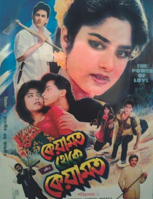
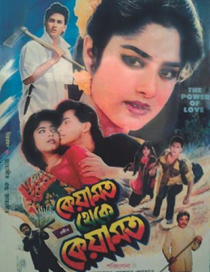

Shahriar Chowdhury Emon (19 September 1971 – 6 September 1996) [2] known by his stage name Salman Shah was a Bangladeshi film and television actor. [3][4][5] He started his career with the first episode of the television serial Pathor Shomoy. He got breakthrough for his role in the film Keyamat Theke Keyamat. [6] His death in 1996 was ruled as a suicide, a claim that is disputed by his family. [7][8]
Movies:
- Agun
- Priyojon
- Bichar Hobe
- Nayan
- Ei Ghor Ei Songsar
- Asha Bhalobasha
- Moha Milon
- Anjuman
- Shopner Thikana
- Den Mohor
- Konnadaan More...
Music:
- Tomake Chai Shudhu
- Bondhu Tumi Amar
- O Sathire Jeona
- Tumi Mor Jiboner Vabona
- Shathi Tumi Amar Jibone
- Ami Je Tomar Preme Porechi
- Shudhu Ekbar Bolo Bhalobasi
Movie Poster:
 



Early life and career:
Shah was born as Shahriar Chowdhury Emon on 19 September 1971 in Zakiganj, Sylhet, Bangladesh to Nilufar Zaman Chowdhury and Kamaruddin Chowdhury.[9] He had a younger brother Chowdhury Mohammad Shahran Evan.[10]In 1993, Shah got his break-through in the film Keyamot Theke Keyamot, directed by Sohanur Rahman Sohan.[11][12] The film was a remake of an Indian film named Qayamat Se Qayamat Tak, released in 1988.[13]
He started his acting career in a television drama. He acted in a total of 27 films.[9] His film career was associated first with actress Moushumi and then Shabnur. He acted with Moushumi in feature films Denmohor and Antore Antore.[14]